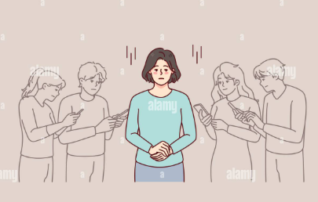
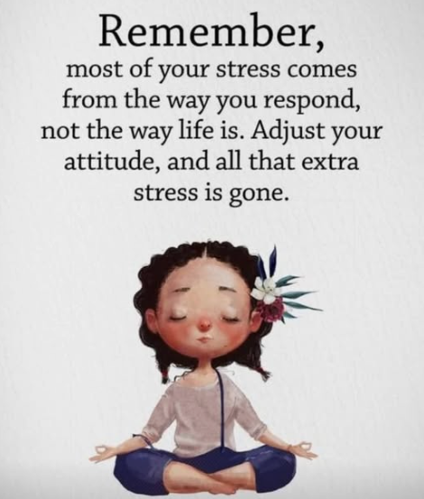

Enjoying life means embracing each moment, big or small, by finding joy in simple pleasures, fostering gratitude,
and living authentically, rather than waiting for perfect occasions; it's about appreciating the gift of being alive
through positive emotions, deep connections, and a mindset that finds beauty in ordinary experiences, transforming everyday
living into a rich, meaningful journey filled with happiness and contentment.
To truly enjoy life, cultivate appreciation for simple things, like nature's sounds or a warm breeze, recognizing these as
blessings. Living authentically by embracing your true self and accepting flaws brings peace, while focusing on love, kindness,
and meaningful relationships, especially with family, brightens your world. Life is a precious, fleeting gift, so stop waiting
for big events; celebrate your existence now, be grateful for what you have, and find joy in the present, because true happiness
comes from within and is accessible in every waking moment.
Do you think billioners don't have any problems?
Many people believe that billionaires do not have problems because they possess enormous wealth, but this idea
is misleading. While money can eliminate certain difficulties such as financial insecurity, lack of access to
healthcare, or limited opportunities, it does not remove all challenges from life. Billionaires often face intense
pressure, constant public scrutiny, complex legal and business responsibilities, and the stress of managing large
organizations that affect thousands of people. In addition, wealth does not protect someone from emotional struggles
like loneliness, anxiety, family conflicts, or trust issues, as it can be difficult to know who truly cares about them.
In reality, billionaires do have problems—just different ones—showing that money alone cannot guarantee happiness or
peace of mind.
Everyone has problems in there Life
Everyone faces challenges and suffering as an inherent part of human existence, supported by psychological
research and philosophical perspectives. No empirical "proof" exists in a mathematical sense, but extensive
evidence from studies and observations shows universality across cultures and circumstances. Viktor Frankl,
a prominent existential psychologist, described suffering as "an ineradicable part of life," entangled in human
existence for all people.
Psychological Evidence
Research indicates suffering arises from psychosocial factors like isolation, poverty, and conflicts, affecting broad
populations beyond those with diagnosed mental health issues. Studies link aspects of suffering—such as powerlessness
or pervasiveness—to outcomes like depressed mood and health perceptions, confirming its presence in everyday life.
Resilience research further highlights that all individuals encounter adversity, adapting through it to maintain well-being.
Philosophical and Cultural Views
Existential views frame problems as universal guidelines rather than stop signs, present in quotes like "Everybody has problems" across diverse sources. Anecdotal and observational accounts, from billionaires facing loneliness to others with chronic pain, reinforce that wealth or status does not exempt anyone. Cultural expectations and cognitive biases shape how suffering manifests but do not eliminate it.
Every relation has problems,sometimes ignoring is better than quarrelling
Every relationship, whether it is based on love, friendship, or family ties, faces problems at
different stages of life. No relationship is perfect because every individual has a different
mindset, emotional background, and way of responding to situations. When two people come close,
misunderstandings, disagreements, and conflicts naturally arise. These challenges do not mean
that a relationship is weak; rather, they show that the relationship is real and involves emotions.
However, the way people handle these problems determines the strength and longevity of the bond.
Constant arguments over small matters can slowly damage trust and affection, making the relationship
emotionally tiring for both sides.
In many situations, ignoring minor issues is better than quarreling. Not every disagreement needs a reaction,
and not every mistake deserves an argument. Small habits, unintentional words, or momentary moods should often
be overlooked for the sake of peace. Choosing to ignore such things helps maintain emotional balance and prevents
unnecessary stress. Quarreling over trivial matters usually leads to anger, harsh words, and regret, which can leave
lasting scars. Silence in these moments is not a sign of weakness but a reflection of maturity, patience, and
emotional intelligence. It shows the ability to prioritize the relationship over ones ego.
However, ignoring should not be confused with suppressing feelings or tolerating disrespect. A healthy relationship
requires self-respect along with understanding. When a problem is serious, repetitive, or emotionally hurtful,
ignoring it can cause silent pain and emotional distance. Bottling up feelings for a long time may lead to resentment,
which can eventually harm the relationship more than open communication. Therefore, it is important to recognize the
difference between small issues that can be ignored and significant concerns that need to be addressed calmly and honestly.
Communication plays a vital role in maintaining this balance. Instead of quarreling, expressing feelings in a calm
and respectful manner helps resolve conflicts without damaging the bond. Listening with empathy and trying to understand
the other person’s perspective can prevent many misunderstandings. When both individuals are willing to adjust, forgive,
and grow together, the relationship becomes stronger. Mutual respect, patience, and emotional awareness create a safe space
where both people feel valued and understood.
In conclusion, every relationship has problems, but not every problem needs a fight. Sometimes, choosing to
ignore small issues is the best way to protect peace and harmony. At the same time, important matters should never
be ignored in the name of silence. A strong relationship is built on the ability to let go of the unimportant, speak
up when necessary, and handle conflicts with maturity and compassion. By maintaining this balance, relationships can
survive challenges and grow deeper with time.

Take every thing calmly and face every problem BRAVELY
Life throws challenges at us relentlessly, but true strength lies
in taking everything calmly while facing problems bravely. Calmness isn't weakness—it's
strategic wisdom that prevents rash decisions and preserves mental clarity. When crises
strike, breathe deeply, assess objectively, and respond with poise rather than panic.
Bravery means confronting issues head-on, not avoiding them. Whether it's a career setback,
relationship strain, or personal failure, charge forward with determination. This courage,
paired with maturity, transforms obstacles into stepping stones. A mature mindset views problems
as temporary teachers, learning lessons without bitterness.
Daily practice builds this resilience: pause before reacting, act decisively yet thoughtfully,
reflect afterward. Relationships improve, stress diminishes, confidence grows. Calmness anchors
you, bravery propels you, maturity guides you. Embrace this approach, and life's storms become
manageable, leading to lasting inner peace and success.

THINK POSITIVE, TAKE DECISIONS CALMLY AND HAVE A BEAUTIFUL LIFE